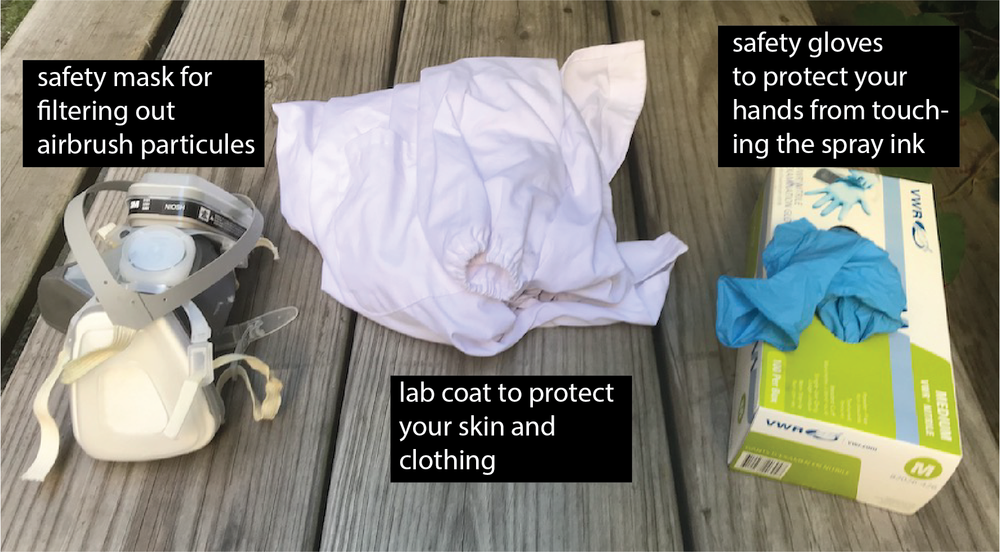
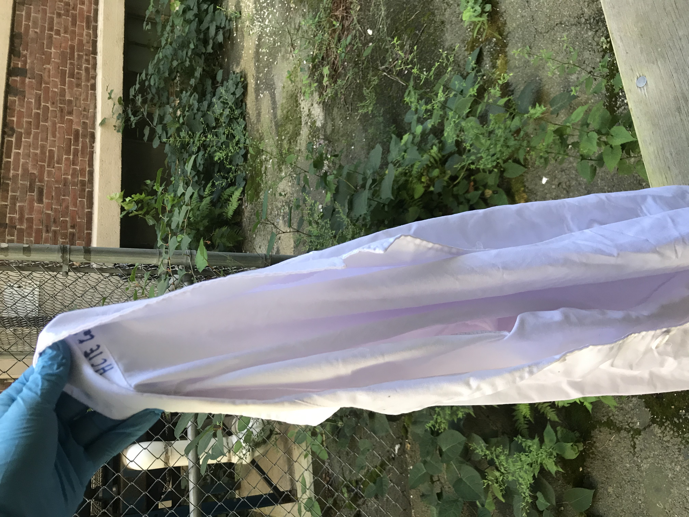
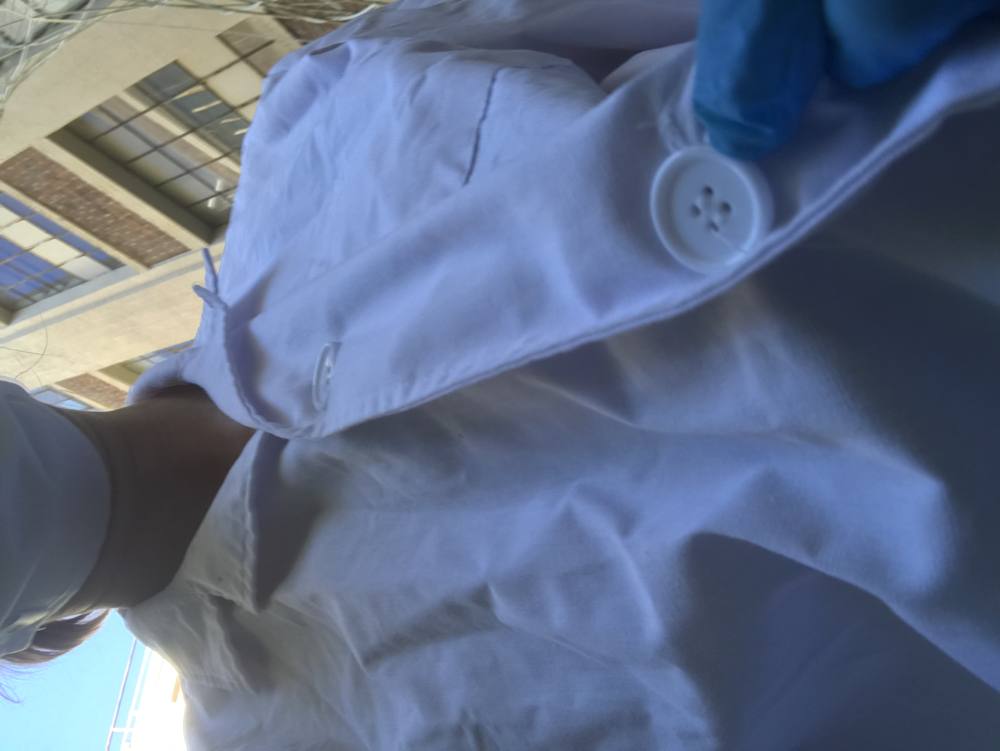
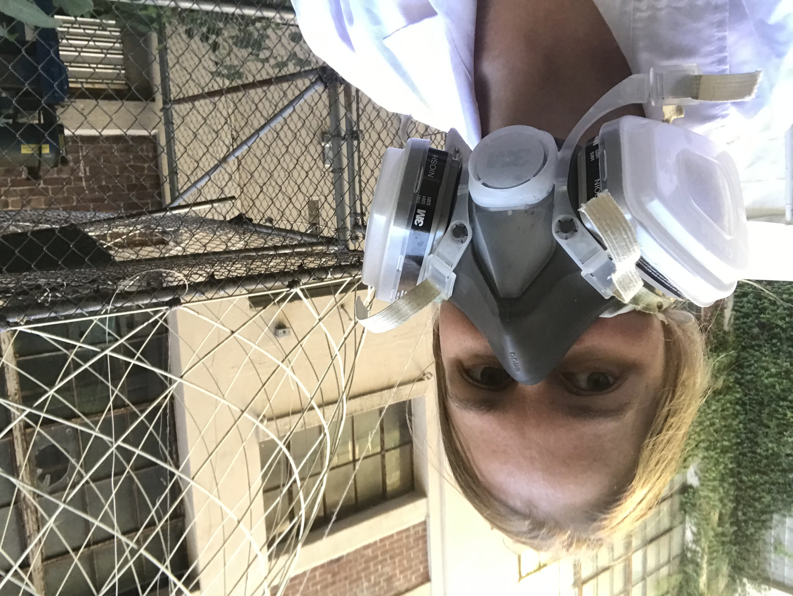
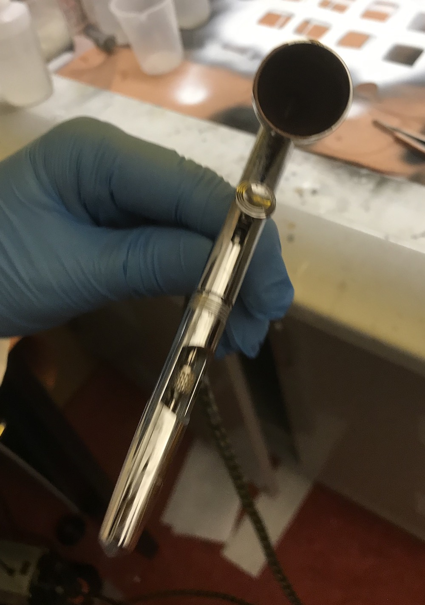
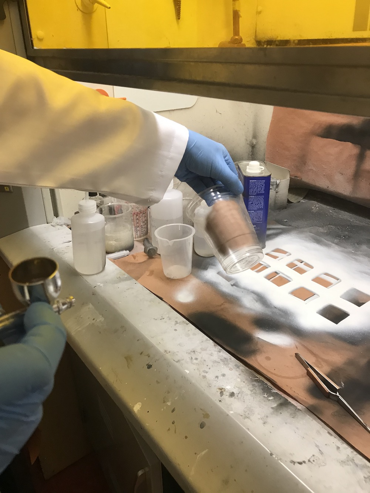

6.810 Engineering Interactive Technologies (fall 2020)
Safety & Spraying
Safety Equipment
For spraying, you need to wear gloves, a lab coat, and a mask that filters out spray particles.
We will give each student their own lab coat and mask. Please keep them for later use in the semester.

Lab Coat
First, put on the lab coat.
Make sure to close all the buttons on the lab coat.
For use in class, we bought disposable lab coats, so once you are done using it dispose it in the appropriate trash.


Gloves
Next, put on the gloves.
Please never touch an ink container, the inks, or a sprayed area directly with your hands.
Touching the ink can lead to some particles being taken up through your skin, so we want to avoid this at all times.

Mask
Next, before touching anything else, put on the mask.
The mask will protect you so that you don't breath in any flying particles during the spraying process.
In class, we will use a disposable mask for each student so you don't have to share.

Safety Glasses
Now also put on your safety glasses so nothing can reach your eye.
glasses image missing
Spraying
Assuming you have already prepared the inks for spraying (which we will do for you), you are now ready to spray.
Turn on the compressor if it isn't on already.
Push the button down to open the valve between the compressor and the airbrush.
If you push the button down, you should feel air coming out from the front of the airbrush but no ink yet.
Once you have confirmed that air is flowing, push the button down and slowly pull it back towards you. This will start the ink flow.
The further you pull it towards you, the more ink will come out.
For spraying functional inks, we always want to pull it back to the maximum.

When you spray, you want to have even coverage.
Aim for ca. 50% overlap between traces.
You need to spray the entire surface first horizontally (left to right) and then afterwards also do a vertical pass (top to bottom).
You need to repeat this at least 5 times to make sure the entire area is covered and there are e.g., no non-conductive patches.
Also while you spray, make sure you have quite some distance between the airbrush and the object. If you are too close drops will from on the surface leading to uneven coverage.
Use a multimeter to check of you reached sufficient conductivity.

Once you are done spraying, you need to let your object dry for at least 4 hours.
After ca. 30 minutes, the ink will not smear anymore but it is not yet completely dry.
Before you leave, make sure you turn off the compressor and most importantly, clean the airbrush.
To read how to clean the airbrush, continue here.